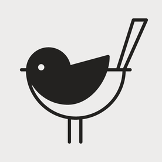

<main class="mdl-layout__content">
    <div class="mdl-grid portfolio-max-width">
        {% for post in paginator.posts %}
        <div class="mdl-cell mdl-card mdl-shadow--4dp portfolio-card">
            <div class="mdl-card__media">
                
            </div>
            <div>
              
            </div>
            <div class="mdl-card__title">
                <h2 class="mdl-card__title-text">{{ post.title }}</h2>
            </div>
            <div class="mdl-card__supporting-text">
                {{post.excerpt}}
            </div>
            <div class="mdl-card__actions mdl-card--border">
                <a id="readMore"class="mdl-button mdl-button--colored mdl-js-button mdl-js-ripple-effect mdl-button--accent" href="{{ post.url }}">আরও পড়ুন</a>
                <button id="share" class="mdl-button mdl-button--icon mdl-js-button mdl-button--fab mdl-js-ripple-effect mdl-button--colored">
                  <i class="material-icons">share</i>
                </button>
            </div>
        </div>
        {% endfor %}
    </div>

    <div class="pagination">
      {% if paginator.next_page %}
      <a class="pagination-item older" href="{{ paginator.next_page_path | prepend: site.baseurl }}">
        <button class="mdl-button mdl-js-button mdl-button--raised mdl-js-ripple-effect mdl-button--accent">
          পুরোনো লেখা
        </button>
      </a>
      {% else %}
        <span class="pagination-item older">
          <button class="mdl-button mdl-js-button mdl-button--raised" disabled>
            পুরোনো লেখা
          </button>
        </span>
      {% endif %}
      {% if paginator.previous_page %}
        <a class="pagination-item newer" href="{{ paginator.previous_page_path | prepend: site.baseurl }}">
          <button class="mdl-button mdl-js-button mdl-button--raised mdl-js-ripple-effect mdl-button--accent">
            নতুন লেখা
          </button>
        </a>
      {% else %}
        <span class="pagination-item newer">
          <button class="mdl-button mdl-js-button mdl-button--raised" disabled>
            নতুন লেখা
          </button>
        </span>
      {% endif %}
    </div>
    <br>
    {% include footer.html %}
</main>
